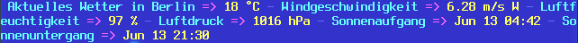

Ansiweather
Dieser Artikel wurde für die folgenden Ubuntu-Versionen getestet:
Ubuntu 16.04 Xenial Xerus
Ubuntu 14.04 Trusty Tahr
Zum Verständnis dieses Artikels sind folgende Seiten hilfreich:
 Ansiweather
Ansiweather  ist ein kleines Shell-Skript, das Wetterinformationen von OpenWeatherMap bezieht und diese im Terminal bzw. in einer virtuellen Konsole farbig anzeigen kann. Es kann entweder als alleinstehendes Programm oder in anderen Skripten verwendet werden.
ist ein kleines Shell-Skript, das Wetterinformationen von OpenWeatherMap bezieht und diese im Terminal bzw. in einer virtuellen Konsole farbig anzeigen kann. Es kann entweder als alleinstehendes Programm oder in anderen Skripten verwendet werden.
Installation¶
Ansiweather kann ab Ubuntu 16.04 direkt aus den offiziellen Paketquellen installiert werden [1]:
ansiweather (universe)
 mit apturl
mit apturl
Paketliste zum Kopieren:
sudo apt-get install ansiweather
sudo aptitude install ansiweather
Manuell¶
Die aktuelle Version von Ansiweather kann manuell installiert werden. Als Voraussetzung zur Umwandlung der Wetterdaten wird das Werkzeug jq benötigt:
jq (universe)
mit apturl
Paketliste zum Kopieren:
sudo apt-get install jq
sudo aptitude install jq
Zum Herunterladen der Wetterdaten zusätzlich entweder wget, ftp oder cURL (die unten angegebene Beispielkonfiguration nutzt cURL). Zur Umrechnung von Einheiten wird außerdem das Kommandozeilenprogramm bc verwendet, das bei Ubuntu bereits vorinstalliert ist.
Anschließend die Datei ansiweather  herunterladen, als ~/bin/ansiweather im Homeverzeichnis speichern und ausführbar machen:
herunterladen, als ~/bin/ansiweather im Homeverzeichnis speichern und ausführbar machen:
mkdir ~/bin cd ~/bin wget https://raw.githubusercontent.com/fcambus/ansiweather/master/ansiweather chmod u+x ansiweather
Wenn eine systemweite Nutzung gewünscht ist, mit Root-Rechten [2] nach /usr/local/bin/ kopieren.
Hinweis!
Fremdsoftware kann das System gefährden.
Bedienung¶
Das Programm wird im Terminal aufgerufen [3]:
ansiweather [OPTIONEN]
Ruft man es ohne Optionen auf, wird das regionale Wetter für Rzeszów (Polen) in englischer Sprache als Text ausgegeben/angezeigt. Beispiel:
Current weather in Rzeszow => 19 °C ☔ - Wind => 3.51 m/s WSW - Humidity => 93 % - Pressure => 1015 hPa - Sunrise => Jun 13 04:42:52 - Sunset => Jun 13 09:30:02
Die wichtigste Option ist daher die Angabe des gewünschten Orts (location) mit -l ORT,LAND.
| Optionen von ansiweather | |
| Parameter | Bedeutung |
-l ORT,LAND | Ortsangabe, z.B. -l Berlin,DE (Liste der Ortsnamen ) |
-u metric/imperial | Verwendete Einheiten, Standard: metric |
-f N | Wettervorhersage für N Tage (max. 7 Tage). Aktuelle Wetterdaten werden dann nicht angezeigt. |
-d true/false | Sonnenaufgang/-untergang anzeigen/verbergen |
-s true/false | Wettersymbole anzeigen/verbergen (benötigt unicode-fähiges Terminal) |
Weitere Optionen sind der Manpage zu entnehmen. Bevorzugt man eine deutschsprachige Ausgabe, legt man eine Konfigurationsdatei an und übersetzt dort die verwendeten Begriffe (siehe nächster Abschnitt).
Konfiguration¶
Dauerhaft gewünschte Optionen lassen sich über die Datei ~/.ansiweatherrc vornehmen (siehe auch ansiweatherrc.example ). Beispiel:
api_key:85a4e3c55b73909f42c6a23ec35b7147 location:Berlin,DE fetch_cmd:curl -s units:metric symbols:false forecast:0 show_daylight:true dateformat:%a %b %d timeformat:%b %d %R # Text and Colors background:\033[44m text:\033[36;1m data:\033[33;1m delimiter:\033[35m=> dashes:\033[34m- greeting_text:Aktuelles Wetter in wind_text:Windgeschwindigkeit humidity_text:Luftfeuchtigkeit pressure_text:Luftdruck sunrise_text:Sonnenaufgang sunset_text:Sonnenuntergang # Icons sun:\033[33;1m\xe2\x98\x80 moon:\033[36m\xe2\x98\xbd clouds:\033[37;1m\xe2\x98\x81 rain:\xe2\x98\x94 fog:\033[37;1m\xe2\x96\x92 mist:\033[34m\xe2\x96\x91 haze:\033[33m\xe2\x96\x91 snow:\033[37;1m\xe2\x9d\x84 thunderstorm:\xe2\x9a\xa1

 Programmübersicht
Programmübersicht- Erstellt mit Inyoka
-
 2004 – 2017 ubuntuusers.de • Einige Rechte vorbehalten
2004 – 2017 ubuntuusers.de • Einige Rechte vorbehalten
Lizenz • Kontakt • Datenschutz • Impressum • Serverstatus -
Serverhousing gespendet von